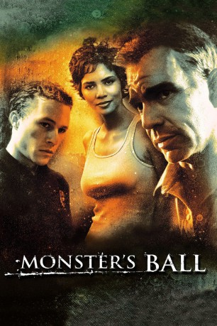

#2947 Monster's Ball
Auszeichnungen: 1 Oscars gewonnen für 1 Oscars nominiert
 
 IMDB-Wertung: 7.1 / 10
IMDB-Wertung: 7.1 / 10  Metascore: 69
Metascore: 69 
Im Süden der Vereinigten Staaten kommt es auf Umwegen zu einer sehr ungewöhnlichen Liebesgeschichte: Der Rassist Hank Grotowski verliebt sich in die Farbige Leticia Musgrove, nachdem er ihr bei einem Unfall geholfen hat, bei dem ihr Sohn ums Leben kam. Groteskerweise arbeitet ausgerechnet Hank als Aufseher in dem Gefängnis, in dem Leticias Ehemann auf dem elektrischen Stuhl hingerichtet worden ist. Davon unwissend gibt sich Leticia ganz dieser neuen Liebe hin.
Jahr: 2001
Dauer: 112 Minuten
FSK: 16
Land: USA Studio: Lions Gate FilmsTonspuren: DTS - ,
Untertitel: Englisch,
Auflösung: 1080p (1920x824) Größe: 8488 MB
Genre: Drama, Liebe
Regisseur:  Marc Forster
Marc Forster
Drehbuch: Milo Addica, Will Rokos
Soundtrack: Asche & Spencer, Chris Beaty
Darsteller:
 Billy Bob Thornton als Hank Grotowski
Billy Bob Thornton als Hank Grotowski Halle Berry als Leticia Musgrove
Halle Berry als Leticia Musgrove Heath Ledger als Sonny Grotowski
Heath Ledger als Sonny Grotowski Peter Boyle als Buck Grotowski
Peter Boyle als Buck Grotowski Yasiin Bey als Ryrus Cooper
Yasiin Bey als Ryrus Cooper- Francine Segal als Georgia Ann Paynes
 Marcus Lyle Brown als Phil Huggins
Marcus Lyle Brown als Phil Huggins- Milo Addica als Tommy Roulaine
 Sean Combs als Lawrence Musgrove
Sean Combs als Lawrence Musgrove Anthony Michael Frederick als Billy
Anthony Michael Frederick als Billy- Stephanie Claire als Nurse
- James Haven als Hospital Guard
 Ritchie Montgomery als Detective
Ritchie Montgomery als Detective Carol Sutton als Ms. Guillermo
Carol Sutton als Ms. Guillermo Anthony Marble als ER Doctor , uncredited
Anthony Marble als ER Doctor , uncredited- T.J. Toups als Waffle House Patron , uncredited
- Taylor Simpson als Lucille
- Gabrielle Witcher als Betty
- Amber Rules als Vera
- Charles Cowan Jr. als Willie Cooper
- Taylor LaGrange als Darryl Cooper
- Anthony Bean als Dappa Smith
 John McConnell als Harvey Shoonmaker
John McConnell als Harvey Shoonmaker- Leah Loftin als Booter
- Coronji Calhoun als Tyrell Musgrove
- Larry Lee als Co #1
- Troy Poret als Co #2
- Paul Smith als Co #3
- Marshall Cain als Correction Officer
- Will Rokos als Warden Velesco
- John Wilmot als Minister
- Dennis Clements als Clements
- Clara Hopkins Daniels als Maggie Cooper
- Bernard Johnson als Deputy Jones
- Jeanette Kontomitras als Tyrell's School Teacher , uncredited
- Earl Maddox als Patron , uncredited
Datei: X:\2001\Monster's Ball (2001, FSK16, 1920x824).mkv seit 05.01.2016
Festplatte: HD 1996-2002
 Es gibt insgesamt 102 Filme in der Gruppe '2001'
Es gibt insgesamt 102 Filme in der Gruppe '2001'